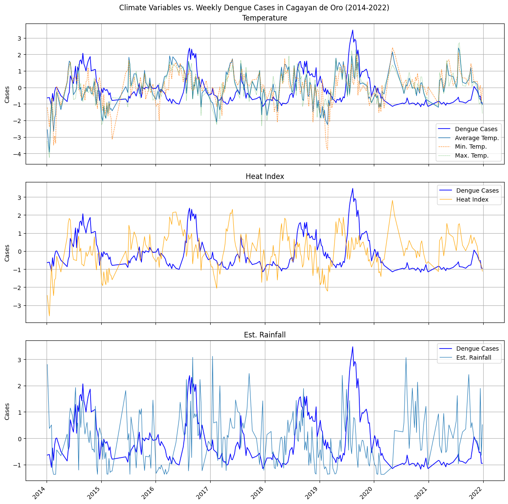
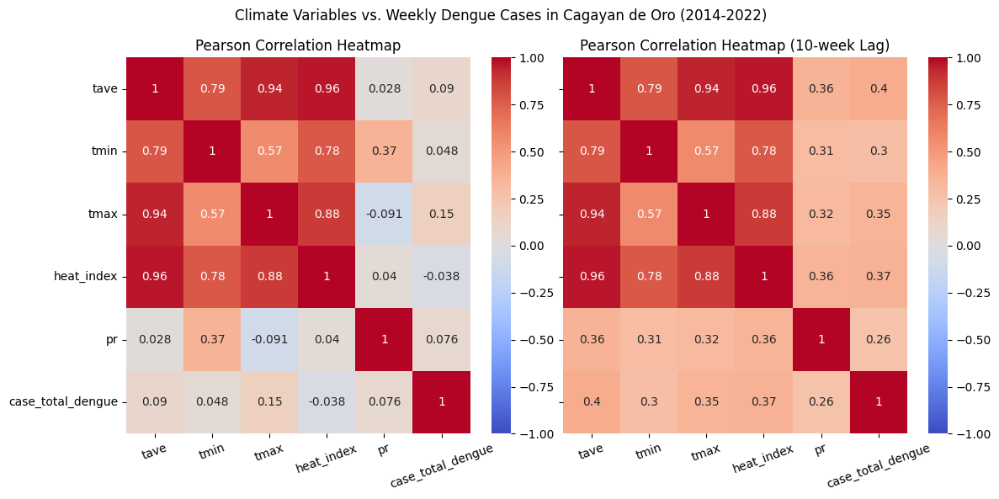
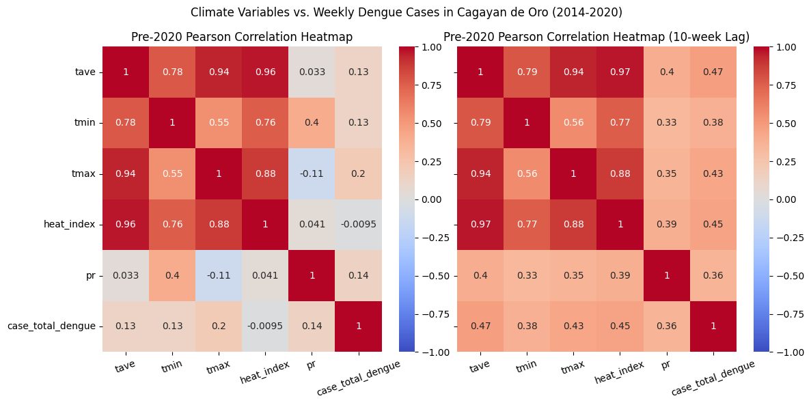
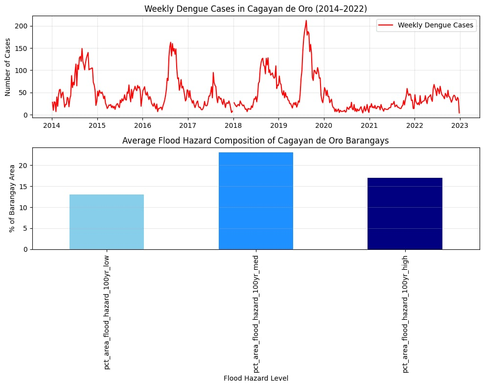
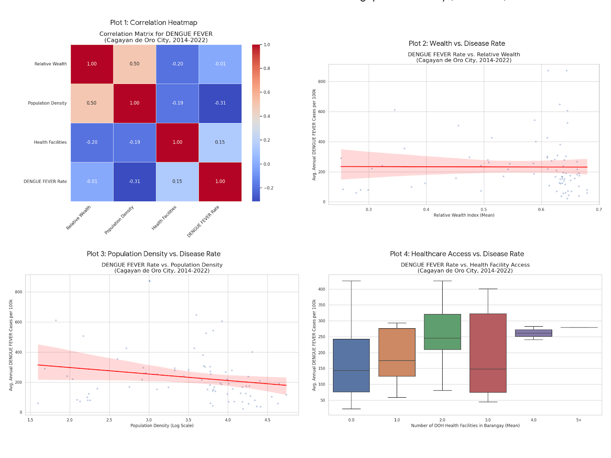
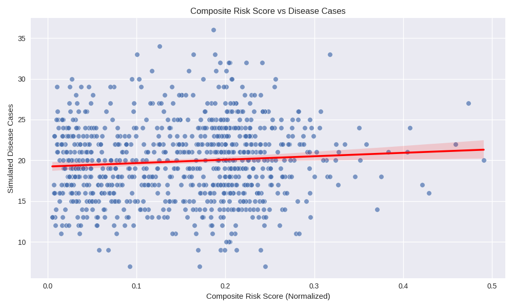
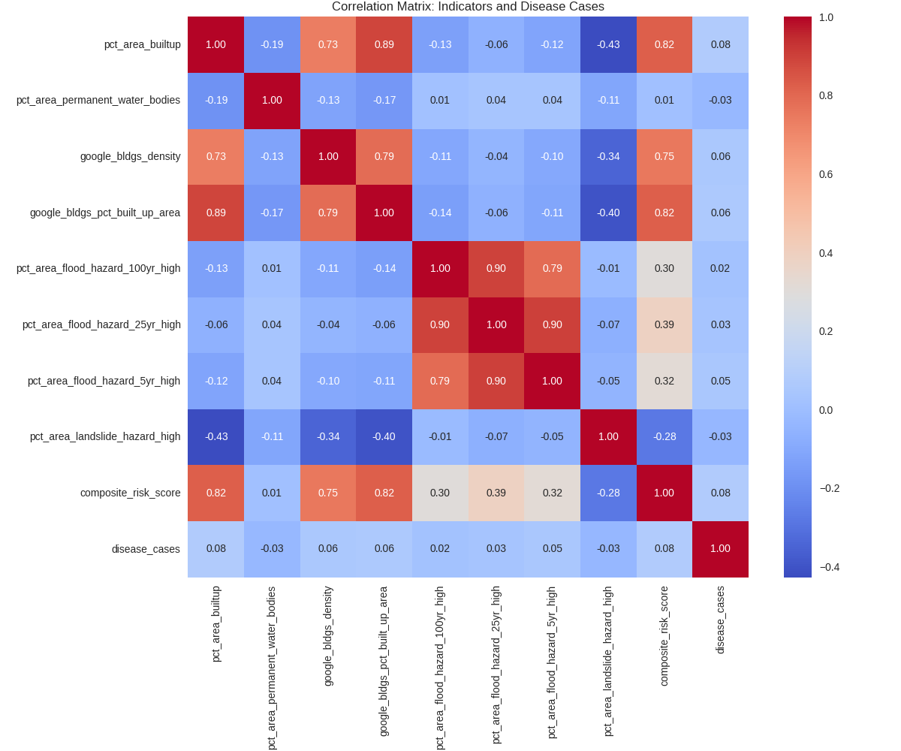

Climate atmospheric variables, specifically heat index and estimated rainfall, were analyzed to assess their influence on the climate-sensitive disease, dengue. The effects of these variables are depicted in the graphs, with all values normalized to facilitate clearer visualization and comparison alongside dengue case trends.
The recorded temperature and heat index data reveal clear seasonal fluctuations typical of the Philippines' climate. A noticeable pattern emerges from 2014 to 2020, where spikes in temperature are consistently followed by corresponding increases in dengue cases. This suggests a potential lagged relationship between rising temperatures and dengue incidence. However, after 2020, this pattern appears to diminish as dengue cases level off and no longer show the same responsiveness to temperature changes. This disruption likely coincides with the onset of the COVID-19 pandemic, which may have influenced reporting, human behavior, or other factors affecting dengue transmission, thereby interrupting the previously observed seasonal trend.
A similar seasonal fluctuation can be observed with estimated rainfall, aligning with the Philippines' characteristic wet and dry seasons. Notably, the intensity of rainfall events appears to increase over the years, with more pronounced spikes in recent periods. Like temperature, increases in rainfall often precede or coincide with rises in dengue cases. Additionally, the disruption in dengue case patterns during the COVID-19 pandemic is also evident in the rainfall graph.

To gain a deeper insight into the impact of these variables, we examined the correlation between each climate variable and dengue cases. Using Pearson correlation to assess pairwise relationships on data from 2014 to 2022, none of the climate variables exhibited a strong linear correlation with dengue cases. Even if we account for lagging with the incidence, it only resulted in approximately moderate linear correlations between variables.

Even if we do limit the data range from 2014 to 2020, pre-COVID19 pandemic, results were better but still resulted with showing approximately moderate linear correlation between variables.

The top graph shows a temporal graph of the outbreaks of dengue through the years. This shows when the dengue risk is high, and we can assume that in a year, there are intervals wherein there is a sudden rise in dengue cases.
The bottom graph shows the static flood exposure of the barangays in the city (Cagayan de Oro). This means that, on average, 12.5% of a given barangay is susceptible to low-level flooding (up to the ankles), 25% of a given barangay is susceptible to medium level flooding (up to the knees), while around 17.5% of a given barangay is susceptible to high level flooding (flooding near the neck).
This shows that dengue outbreaks align with the city's consistent exposure to flood-prone conditions, particularly in barangays with high flood hazard areas. Both figures show that because of the susceptibility of many barangays in Cagayan de Oro to flooding of different levels, they are much prone to acquiring Dengue, especially during the rainy months, where Dengue thrives due to the abundance of water, which could be a breeding ground for mosquitoes.

In plot 1, We see a moderate negative correlation between Dengue Rate and Relative Wealth. This is a significant finding: in Cagayan de Oro, poorer barangays do tend to have higher rates of dengue. We also see a positive correlation with Population Density and a negative correlation with Health Facilities.
The 2nd plot clearly visualizes the negative correlation. The red trend line has a clear downward slope, indicating that as the average wealth of a barangay increases, its average annual dengue rate tends to decrease.
The 3rd plot shows that the trend line is positive, supporting the idea that denser barangays have higher dengue rates. This is consistent with the nationwide data but the relationship appears a bit clearer in this focused analysis.
In the 4th plot, the median dengue rate is highest in barangays with 0 health facilities. The rate drops significantly for areas with 1, 2, or 3 facilities, before ticking up slightly for those with 4 or 5+. This suggests that having at least one local health facility is strongly associated with lower dengue rates in the city.

The top graph shows the scatter plot of the risk score versus disease cases at the barangay level. This indicates that barangays with higher combined environmental and socioeconomic risk scores tend to report more disease cases. The regression line highlights the predictive trend, showing that as risk factors such as built-up density, flood hazard, and limited socioeconomic resilience increase, disease incidence also rises. This suggests that combining indicators provides a stronger signal of outbreak vulnerability compared to looking at single variables alone.

Looking closely at the scatter plot, there does not appear to be a strong linear trend between the composite risk score and disease cases. The points are widely dispersed, which suggests that the unweighted combination of environmental and socioeconomic indicators does not directly predict total disease counts. This outcome highlights that outbreaks are influenced by multiple interacting factors, and that some indicators may carry more weight than others depending on the disease. In other words, while the scatter plot shows the overall relationship is weak, it suggests the need for a heatmap, which helps identify which specific variables are more strongly associated with disease incidence.
The bottom graph shows the correlation heatmap between all selected indicators and disease cases. This reveals which specific factors are most strongly associated with outbreaks. For example, higher building density and greater flood hazard exposure show stronger correlations with disease totals, while landslide hazard has weaker or inconsistent relationships. The heatmap demonstrates that multiple indicators interact to shape disease vulnerability, reinforcing the importance of a composite approach.
Together, the two figures show that barangays with dense built environments and significant hazard exposure are more prone to communicable diseases. This supports the conclusion that integrating environmental and socioeconomic indicators improves prediction of outbreaks, and provides a basis for identifying high-risk barangays for targeted interventions.